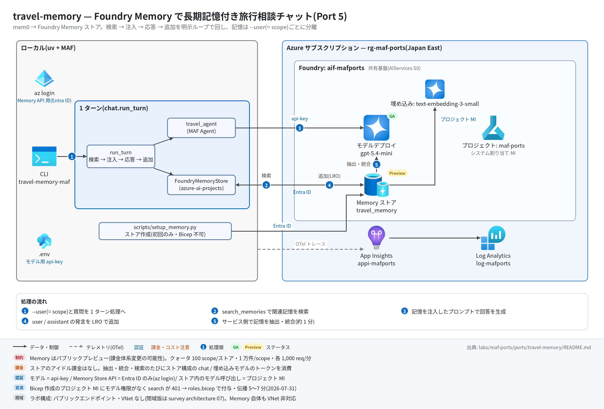

travel-memory 実行ガイド
対象:
labs/maf-ports/ports/travel-memory/(Port 5・パターン: Foundry Memory による長期記憶 — 検索 → 注入 → 応答 → 追加の明示ループ)
最終確認: 2026-09-29 オフライン(23 passed・ruff check .clean・依存 agent-framework-core 1.19.0 / agent-framework-openai 1.14.4 / azure-ai-projects 2.7.0 / openai 3.20.0)/ ライブ: 2026-07-31(当時の構成 core 1.12.1 / azure-ai-projects 2.4.0 / openai 2.51.0。Azure リソースは削除済み — 再デプロイ手順は §5)
正は本 Markdown。 人間用 HTML(同じディレクトリのrunbook.html)はpython3 labs/tools/build_runbooks.pyで生成する(HTML は直接編集しない)。設計判断と移植の学びは README。
1. このパターンで確かめること
- 1 ターン目で伝えた嗜好(例: 窓側席・ベジタリアン)が、Foundry Memory の非同期抽出(LRO)を経て
--userの scope に記憶として保存され、2 ターン目のsearch_memoriesでヒットしてRelevant past information:としてプロンプトに注入されること。 - 記憶が
--user(= Foundry の scope)単位で完全に分離され、delete_scopeで丸ごと消せること。 - 技術選定上の意味: mem0 の
addは同期だが Foundry は LRO+debounce(既定update_delay=300秒)。本ポートはupdate_delay=0+previous_update_idチェーンで毎ターン追加を近似するが、「追加した事実がいつ検索に見えるか」の結果整合性は消えない(README の学び 1)。Memory はパブリックプレビュー(VNet 非対応・課金体系変更の可能性あり)。
2. 構成

質問 ─▶ MemoryStore.search(query, user) Foundry: search_memories(scope=user, max_memories=5)
─▶ build_full_prompt "Relevant past information:\n- ...\n\nHuman: <質問>\nAI:"
─▶ travel_agent(MAF Agent) Responses API(共有基盤のモデル)
─▶ MemoryStore.add(質問, role=user) Foundry: begin_update_memories(update_delay=0, previous_update_id=…)
MemoryStore.add(回答, role=assistant) (既定 fire-and-forget。--wait で LRO 完了まで待つ)| コンポーネント | 役割 | 課金 |
|---|---|---|
CLI / chat.run_turn(ローカル) |
検索 → 注入 → 応答 → 追加の順序を保つ 1 ターン処理 | なし |
MAF Agent travel_agent(agents.py) |
OpenAIChatClient(Responses API)で共有基盤のモデルを api-key で呼ぶ |
— |
| モデルデプロイ(共有基盤、既定 gpt-5.4-mini) | 回答生成+Memory ストアの chat_model(事実抽出・統合) | トークン従量 |
| 埋め込みデプロイ text-embedding-3-small | Memory ストアの embedding_model(記憶の検索) | トークン従量 |
Foundry Memory ストア travel_memory(プロジェクトのデータプレーン、プレビュー) |
記憶の抽出・統合・検索。scripts/setup_memory.py で作成(Bicep 不可) |
ストア自体のアイドル課金なし。抽出・検索時に上の 2 デプロイのトークンを消費 |
| App Insights(共有基盤) | OTel トレースの送信先(任意) | 取り込み量従量 |
クォータ(プレビュー): 100 scopes/ストア・10,000 memories/scope・search / update 各 1,000 req/min。
3. 前提
| 区分 | 必要なもの | 備考 |
|---|---|---|
| ツール | uv(Python 3.11 以上。uv が取得。検証は 3.13) | オフライン実行はこれだけ |
| ツール(ライブ) | Azure CLI(az login 済み) |
Memory Store API は Entra ID 認証(DefaultAzureCredential、audience https://ai.azure.com/)。チャットモデルは api-key |
| Azure(ライブのみ) | 共有基盤(infra/shared.bicep)+第 2 段の infra/roles.bicep+埋め込みデプロイ text-embedding-3-small |
埋め込みは Port 4 corrective-rag の infra/main.bicep が追加する(AI Search Free も一緒に作られる)。埋め込みだけ欲しい場合は §5.1 の az コマンド |
| 権限(サービス側) | プロジェクト MI とアカウント MI に Cognitive Services OpenAI User+Foundry User(roles.bicep が付与) | 欠けると search_memories が 401(Memory サービスがストア構成のモデルを MI で呼ぶため)。伝播に 5〜15 分 |
| 権限(実行ユーザー) | az login の ID にプロジェクト(またはアカウント)の Foundry User(旧名 Azure AI User、ロール ID 53ca6127-db72-4b80-b1b0-d745d6d5456d) |
Owner / Contributor はデータアクションを含まないため別途必要 |
| リージョン | 共有基盤は Japan East(Memory 対応 19 リージョンに含まれる) | VNet 統合は非対応 |
環境変数(labs/maf-ports/.env。雛形は .env.example。ライブ実行時のみ必要。読み込み順はカレントの .env → lab ルートの .env で、既にシェルにある値が優先):
| 変数 | 用途 | 取得元 |
|---|---|---|
FOUNDRY_PROJECT_ENDPOINT |
Memory Store API の呼び先(https://<foundry>.services.ai.azure.com/api/projects/maf-ports)。必須 |
shared.bicep の出力 projectEndpoint(本ポートの infra/main.bicep も同じ値を出力) |
FOUNDRY_OPENAI_V1_ENDPOINT |
モデル呼び出し先(https://<foundry>.openai.azure.com/openai/v1)。必須 |
shared.bicep の出力 openaiV1Endpoint |
FOUNDRY_MODEL |
回答用デプロイ名。setup_memory.py の chat_model の既定にもなる。必須 |
shared.bicep の出力 modelDeploymentName |
FOUNDRY_API_KEY |
モデルの api-key 認証。必須(Memory API には使わない) | az cognitiveservices account keys list -n <foundryName> -g <rg> --query key1 -o tsv |
MEMORY_STORE_NAME |
Memory ストア名。任意(既定 travel_memory) |
自分で決める(setup_memory.py と CLI で同じ値) |
MEMORY_STORE_EMBEDDING_MODEL |
setup_memory.py が使う埋め込みデプロイ名。任意(既定 text-embedding-3-small) |
埋め込みデプロイ名 |
APPLICATIONINSIGHTS_CONNECTION_STRING |
トレース送信先。任意(未設定ならトレース無効で実行は続く) | shared.bicep の出力 appInsightsConnectionString |
4. オフライン実行(Azure 不要・無料)
cd labs/maf-ports/ports/travel-memory
uv sync --extra dev
uv run pytest # 期待: 23 passed, 1 deselected(live は既定で除外。ネットワーク不要)
uv run ruff check . # 期待: All checks passed!(図スクリプト docs/architecture.py を含む)オフラインテストが固定している主な挙動(記憶層は InMemoryFakeStore / SDK 互換スタブ、LLM は ScriptedAgent):
- 1 ターンの順序が「search → 応答 → add(user)→ add(assistant)」で、add 時点で応答が確定している(
test_turn_order_search_inject_respond_add) - プロンプト書式が元アプリと 1 文字単位で一致し、記憶 0 件でもヘッダーだけは注入される(
test_build_full_prompt_matches_original_format/test_no_memories_still_injects_header) - 空応答は
ValueErrorで、記憶への追加は行われない(test_empty_answer_raises_and_skips_memory_add) - alice の記憶が bob のプロンプト・検索・一覧に漏れない(
test_user_scope_isolation_end_to_end/test_user_id_scope_isolation) - SDK 呼び出しの写像: user_id →
scope、テキスト →{"role", "type": "message", "content"}、limit →MemorySearchOptions.max_memories(test_search_maps_arguments_and_results/test_add_sends_message_item_with_role) -
previous_update_idが scope ごとにチェーンされ、update_delay既定 0、wait_for_update=Trueのときだけ LRO を待つ(test_add_chains_previous_update_id_per_scope/test_update_delay_defaults_to_immediate/test_wait_for_update_awaits_lro_result) -
delete_allがdelete_scopeを呼び、その scope のチェーンをリセットする(test_delete_all_calls_delete_scope_and_resets_chain)
5. ライブ実行(Azure 必要・課金あり)
5.1 デプロイ
# 共有基盤+roles.bicep が未作成なら先に作る(→ labs/maf-ports/infra/docs/runbook.md)。
# 埋め込みデプロイ: Port 4 の infra を流す(AI Search Free も作られる)か、埋め込みだけを追加する(例):
az cognitiveservices account deployment create -n aif-<baseName> -g <rg> \
--deployment-name text-embedding-3-small --model-name text-embedding-3-small \
--model-version 1 --model-format OpenAI --sku-name GlobalStandard --sku-capacity 10
# 任意: 共有基盤の存在確認とエンドポイント取得(existing 参照+出力のみのテンプレート)
cd labs/maf-ports/ports/travel-memory
az deployment group create -g <rg> -f infra/main.bicep -p baseName=<baseName> \
--query properties.outputs -o json # 期待: openaiV1Endpoint / projectEndpoint が返る
# Memory ストア作成(データプレーン。1 回だけ。要 az login)
uv sync --extra dev --extra live
uv run python scripts/setup_memory.py # 既存ならスキップ。--recreate で作り直しsetup_memory.py の出力例:
created memory store: travel_memory (id=...)
chat_model=gpt-5.4-mini embedding_model=text-embedding-3-small(2 回目以降は memory store already exists: travel_memory (id=...) と定義が表示される)
5.2 実行
uv run travel-memory-maf --user alice --wait --once "長距離便は必ず窓側席、機内食はベジタリアンです"
uv run travel-memory-maf --user alice --once "東京からロンドンの航空券、何をリクエストすべき?"
uv run travel-memory-maf --user alice --memories # 抽出された記憶の一覧(元アプリの View My Memory)
uv run travel-memory-maf --user alice # 対話モード(/memories で一覧、/quit で終了)
uv run pytest -m live # ライブスモーク(1 passed が期待。2026-07-31 は 139 秒)--wait は記憶追加の LRO(抽出・統合)完了まで待つ。1 ターンあたり 1 分程度かかることがある。付けないと fire-and-forget で即座に戻る。
期待される出力の例(値は実行ごとに変わる。抽出される記憶の文面と件数は LLM 依存):
[memory] 0 hits ← stderr(1 ターン目。まだ記憶がない)
承知しました。窓側席とベジタリアン機内食ですね… ← stdout(回答)
[memory] 2 hits ← stderr(2 ターン目)
- User prefers window seats on long-haul flights
- User requests vegetarian in-flight meals
航空会社には窓側席の指定とベジタリアンミール(VGML 等)を…
Memory history for alice: ← --memories
- User prefers window seats on long-haul flights [user_profile]
- ... [chat_summary]終了コードは 正常 0 / 環境変数不足 2(error: 環境変数が未設定: ...)。Memory API のエラー(401 / 404 など)は azure-core の例外のトレースバックで終わる。
6. 確認観点
| 確認 | # | 観点 | 確認方法 | 期待結果 |
|---|---|---|---|---|
| 1 | 正常系: 記憶の往復 | §5.2 の 1〜2 行目(1 ターン目は --wait) |
2 ターン目の stderr が [memory] 1 hits 以上で、嗜好(窓側・ベジタリアン)を含む記憶が表示され、回答がそれを踏まえている |
|
| 2 | 記憶の型付け・統合 | --memories |
各行末に [user_profile] / [chat_summary] / [procedural] のいずれかの kind。同じ嗜好を言い直しても重複行が増え続けない(統合)。抽出は LLM 依存なので件数は固定しない |
|
| 3 | パターン固有: 結果整合性 | 新しい --user で --wait なしに嗜好を伝え、直後に関連質問 → 1〜2 分後に同じ質問 |
直後は [memory] 0 hits になり得る(LRO 未完了)。時間をおくとヒットする。「記憶の鮮度がターン単位で要るか」の判断材料 |
|
| 4 | scope 分離 | uv run travel-memory-maf --user bob --once "東京からロンドンの航空券、何をリクエストすべき?" と --user bob --memories |
bob は [memory] 0 hits、一覧は (no memories for user 'bob')。alice の嗜好が回答に出ない |
|
| 5 | 異常系: 設定不足 | FOUNDRY_PROJECT_ENDPOINT= uv run travel-memory-maf --user x --once hi(空文字はシェル側の値が優先され .env で上書きされない) |
終了コード 2、stderr に error: 環境変数が未設定: FOUNDRY_PROJECT_ENDPOINT(labs/maf-ports/.env を確認。…) |
|
| 6 | 異常系: ストア未作成 | MEMORY_STORE_NAME=no_such_store uv run travel-memory-maf --user alice --once hi |
search_memories が 404 系の HttpResponseError で終了(ライブ未確認)。検索が先なのでモデルは呼ばれず、記憶も追加されない |
|
| 7 | パターン固有: サービス側 RBAC | roles.bicep 直後に #1 を実行 | 401 が出る場合は MI への Cognitive Services OpenAI User / Foundry User の伝播待ち(5〜15 分。ノード間で不均一で、一度通っても数分 401 が混ざることがある) | |
| 8 | 観測: トレース着信 | §7 の KQL | invoke_agent travel_agent と chat <デプロイ名> がターン数分出る。Memory API の呼び出しは HTTP / Azure SDK の依存関係として出る(名前は未確認) |
|
| 9 | コスト | ポータルで 2 デプロイ(gpt-5.4-mini / text-embedding-3-small)のトークンメトリック | 1 ターン = 回答の chat 1 回+検索 1 回+追加 LRO 2 回(user / assistant の抽出・統合でチャットモデルと埋め込みを消費)。ストアのアイドル課金はない | |
| 10 | 後片付け | uv run python scripts/setup_memory.py --delete |
deleted memory store: travel_memory。ライブスモークはテスト scope を delete_scope で自動掃除済み |
7. トレース・評価の確認
# スパン名ごとの件数(送信から着信まで数分かかることがある)
az monitor app-insights query --app appi-<baseName> -g <rg> \
--analytics-query "dependencies | where timestamp > ago(30m) | summarize count() by name"- 期待するスパン名:
invoke_agent travel_agent/chat <デプロイ名>(ツールは使わないのでexecute_toolは出ない)。azure-monitor-opentelemetry 1.8.10 は httpx と Azure SDK を既定で計装するため、Memory API(…/memory_stores/travel_memory:search_memoriesなど)や Responses API の HTTP 呼び出しも依存関係として並ぶ(1.8.9 時代のライブより行が増える。名前はライブ未確認)。 - 評価: tests/eval_dataset.jsonl(5 ケース)は全て多ターンシナリオ(座席+機内食 / 低予算宿 / 甲殻類アレルギー / scope 分離 / 嗜好の更新)。
--waitでターン間の抽出完了を保証して流し、TurnResult.prompt(注入済み全文)を Relevance / Task adherence 評価器に渡せる形。クラウド評価の実装はない(評価 API の使い方は Port 9 critique-loop)。
8. 片付け
uv run python scripts/setup_memory.py --delete # Memory ストアを削除(全 scope の記憶が消える)
# 共有基盤ごと消す場合:
az group delete -n <rg> --yes --no-wait- 特定ユーザーの記憶だけ消す(GDPR 的な削除要求の再現)なら、
FoundryMemoryStore.delete_all(user_id)(=delete_scope)を使う。CLI にはこのサブコマンドはない(ライブスモークが使用)。 - Memory ストアはリソースグループ削除でプロジェクトごと消える。埋め込みデプロイを az で追加した場合もアカウントと一緒に消える。
9. トラブルシューティング
| 症状 | 原因 | 対処 |
|---|---|---|
error: 環境変数が未設定: ...(終了コード 2) |
labs/maf-ports/.env がない / 変数名の誤り |
.env.example をコピーし、共有基盤の出力を転記。FOUNDRY_PROJECT_ENDPOINT を忘れやすい |
DefaultAzureCredential failed to retrieve a token |
az login していない / テナント違い |
az login(必要なら --tenant)。Memory API は API キーでは呼べない |
search_memories が 401 ResourceError |
サービス側がストア構成モデルをプロジェクト MI で呼べない(Bicep 作成プロジェクトは自動付与されない) | roles.bicep を流したか確認し、5〜15 分待って再実行 |
403 / PermissionDenied(自分の呼び出し) |
実行ユーザーにデータプレーンのロールがない | プロジェクト(またはアカウント)に Foundry User を付与 |
| 404(ストア) | setup_memory.py 未実行 / MEMORY_STORE_NAME の不一致 |
setup_memory.py で作成、名前を揃える |
setup_memory.py が 400 系で失敗 |
chat / embedding のデプロイ名が存在しない | az cognitiveservices account deployment list -n <foundryName> -g <rg> -o table で確認し --chat-model / --embedding-model で指定 |
| 記憶がいつまでも 0 件 | LRO 未完了 / 抽出対象の情報がない発言だった | --wait を付けて再実行。--memories で保存状況を直接見る |
tracing: App Insights 有効 が出ない |
接続文字列が未設定、または --extra live 未導入 |
uv sync --extra dev --extra live と APPLICATIONINSIGHTS_CONNECTION_STRING を確認 |
10. 関連・更新履歴
- 設計判断と学び: README
- 共有基盤(デプロイ・.env・RBAC・削除): 共有基盤の実行ガイド
- Memory の機能状況(プレビュー・クォータ・リージョン): features/03-agent-service.md
- 次のパターン: github-mcp(Port 6・リモート MCP)
| 日付 | 内容 |
|---|---|
| 2026-09-29 | 初版(依存を agent-framework-core 1.19.0 / azure-ai-projects 2.7.0 / openai 3.20.0 に更新。Memory Store API の変更なしを確認。setup_memory.py の TTL を timedelta(0) に。構成図を v2(日本語・処理順バッジ・タグ付き注記)に更新し、図スクリプトも ruff clean に) |